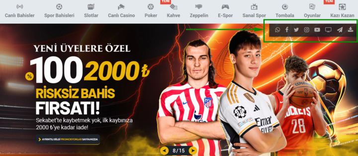
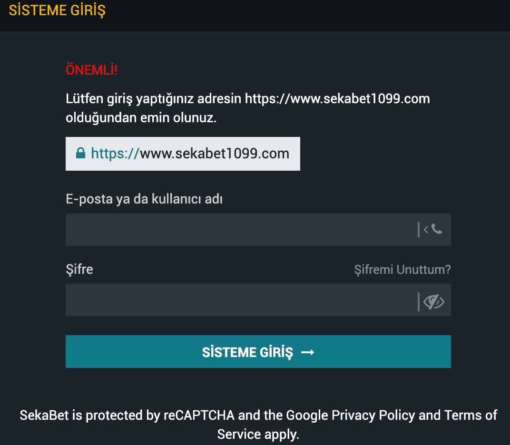
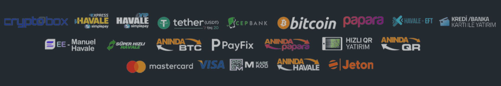
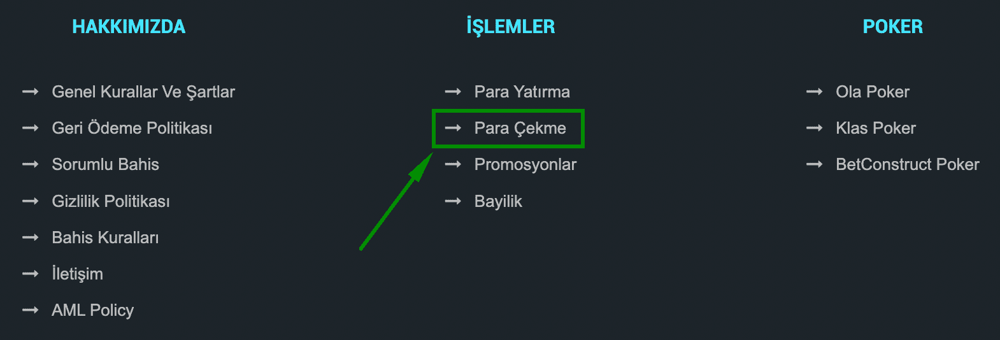
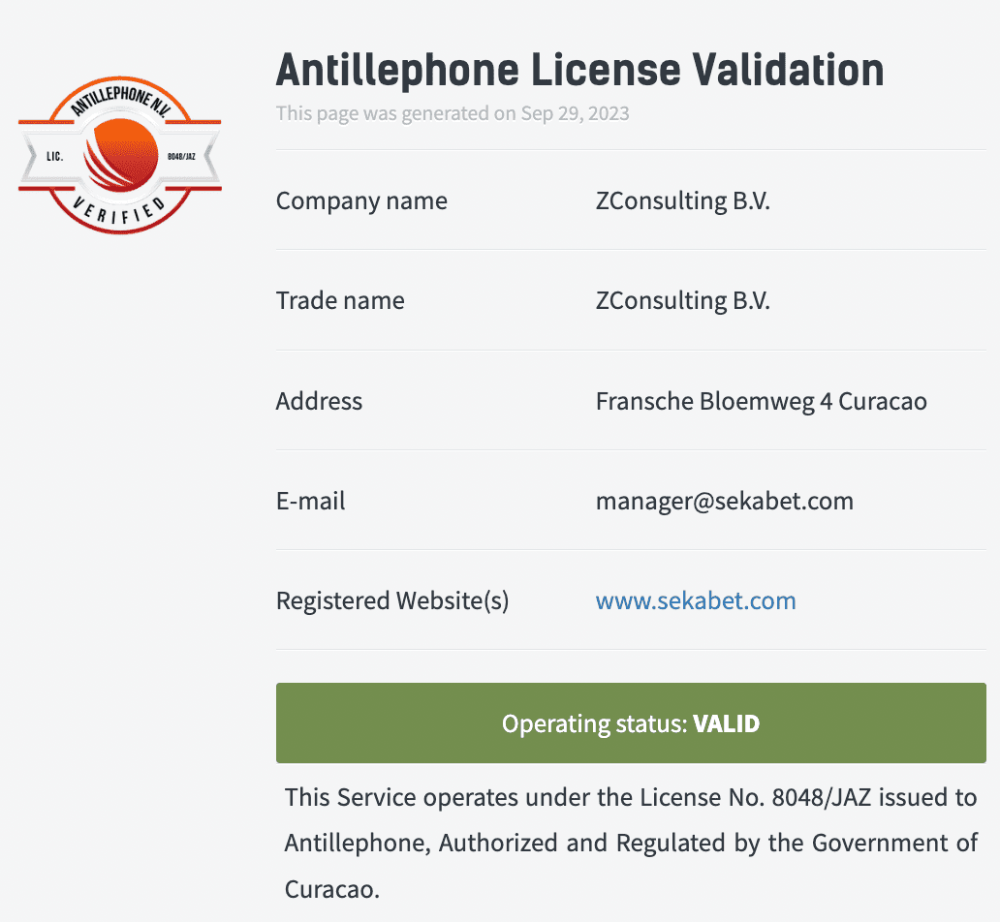
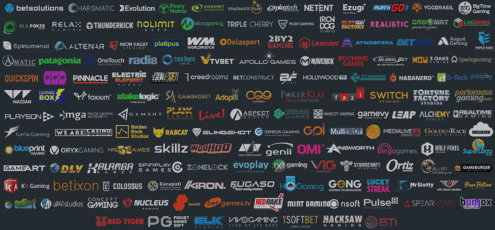

Sekabet sitesi
Sekabet bünyesinde yatırımlarını gerçekleştiren her yatırımcı temel olarak güvenilir bir şekilde bahis yatırımlarını gerçekleştirebilir. Nitekim Sekabet firmasının tercih edilmesindeki en önemli nedenlerden biri de tam olarak bu durumdur. Firmanın bu denli büyük bir şekilde büyümesi ve devasa bir kitleye bahis hizmeti sağlıyor olmasının en temel nedeni, sağlamış olduğu güven ortamıdır. Lisanslı olması ve tamamen kontrollü bir firma olması, direkt olarak Sekabet’i güvenilir bir bahis sitesi haline getirmektedir.
| Sekabet Seçenekleri | Açıklama |
| Spor Bahisleri | Geniş spor dallarında çeşitli bahis seçenekleri |
| Canlı Bahis | Maçların devam ettiği sırada bahis yapma imkanı |
| Casino Oyunları | Slotlar, rulet, blackjack ve diğer casino oyunları |
| Canlı Casino | Gerçek krupiyelerle canlı casino deneyimi |
| Sanal Sporlar | Sanal sporlarla bahis yapma imkanı |
| Bonus ve Promosyonlar | Yatırım bonusları, hoş geldin bonusları ve daha fazlası |
| Mobil Uygulama | Mobil cihazlarda bahis ve oyun oynama imkanı |
| Çoklu Dil Desteği | Türkçe dışında birçok dilde hizmet |
| Çeşitli Ödeme Yöntemleri | Kredi kartı, banka havalesi, e-cüzdan ve daha fazlası |
| 7/24 Canlı Destek | Sorularınız için her zaman yardımcı destek |
| Güvenlik ve Lisans | Lisanslı ve güvenli bir oyun platformu |
Sekabet sanal bahis firmasının bir diğer önemli avantajı ise oranlarıdır. Sanal bahis yatırımcıları oransal olarak oldukça büyük bir havuzun içerisinde kendilerine yer bulurlar. Oran anlamında sorun yaşamak istemeyen yatırımcılar, direkt olarak Sekabet’i tercih ederek, piyasa genelindeki en yüksek oranlarda yatırımlarını gerçekleştirirler. Bunun yanı sıra bonuslar da yine oran çerçevesinde bakıldığı takdirde, firmanın fark yarattığı noktalardan bir diğeridir. Sekabet firmasının hizmetleri oldukça üst düzey seviyededir. İletişim konusunda da her daim yatırımcılara destek sağlayan bu firma, doğal olarak ülkemizde hem en çok kazandıran hem de en çok tercih edilen sanal bahis firmalarından biri olarak anılır.
Sekabet Yeni Adresini Öğrenme
Sekabet sanal bahis sitesinin yeni adresini öğrenmek isteyen yatırımcılar, bu noktada birkaç yönteme sahiptirler. Bu yöntemler sayesinde Sekabet’e ulaşmak son derece kolay olacaktır ve giriş adresi değişiklikleri siz değerli yatırımcıları etkilemeyecektir.
Sekabet giriş adresi öğrenmek ve sorunsuz giriş adresi işlemlerinden yararlanmak adına şu gibi detaylardan faydalanılması söz konusu olabilir:
- Sekabet sanal bahis sitesinin, sitemiz ile yürütmüş olduğu çalışma kapsamında en güncel ve güvenilir adresleri direkt olarak sitemizden öğrenebilirsiniz.
- Sekabet sosyal medya hesaplarını takip ederek en sorunsuz bir şekilde giriş adreslerini öğrenebilirsiniz.
- Sekabet tarafından size iletilen e-posta veya SMS bildirimleri ile güncel adresi öğrenebilirsiniz.
- Sekabet mobil uygulaması sayesinde güncel adreslere anında ulaşabilir ve hatta adres değişikliği gibi konularda etkilenmeden, yatırımlarınızı kolaylıkla gerçekleştirebilirsiniz.
Sekabet Yeni Giriş Adresi
Sekabe sanal bahis sitesinin bilindiği üzere belirli aralıklarla giriş adresleri yenilenir. Bu adreslerin yenilenmesi gerek BTK kısıtlamaları gerekse Sekabet’in almış olduğu güvenlik tedbirleri ile doğrudan bağlantılıdır. Tüm bunların neticesinde ise değişen bir giriş adresinin yenisini tahmin etmek ya da bir giriş adresi keşfettiğinizde, bu adresin Sekabet’e ait olup olmadığını öğrenmek pek de zor olmayacaktır.
Bilindiği üzere firma tarafından yayınlanan yeni bir Sekabet giriş adresinde mutlaka firma ismi ve hemen sonrasında iki haneli ya da üç haneli rakamlar yer alır.
Bu rakamlar, adresler her değiştiğinde değişirler. Bu formatın dışında da herhangi bir şekilde giriş adresiyle karşılaşmak söz konusu olmaz.
İşte Sekabet tarafından belirlenecek olan bir sonraki giriş adresi de yine aynı şekilde yatırımcıların karşılarına çıkacaktır. Bu nedenle yeni keşfettiğiniz bir adres sonucunda, bu adresin kime ait olup olmadığını net bir şekilde öğrenmeniz mümkün olur.
Sekabet Güncel Giriş
Sekabet giriş adresinin tekrar aktif hale gelmesi saniyeler dahi sürmemektedir. Böylelikle sanal bahis yatırımlarınız neticesinde kesintisiz bir gelir akışına sahip olmanız, her daim bahis sistemine bağlı kalmanız ve saatlerce giriş adresi arayışı gibi bir zahmetten de uzak kalmanız söz konusu olacaktır. Sekabet güncel giriş konusunda yatırımcılar mutlaka sitemizden yardım almalıdırlar. En azından diğer giriş adresi temin seçeneklerini de değerlendirebilirler.
Sekabet Güncel Giriş Avantajları
| Anında Erişim | Sekabet, güncel giriş adresi sunarak anında erişim imkanı sağlar |
| Kesintisiz Hizmet | Giriş adresi kapandıysa yeni adres hemen hizmete girer, böylece kesintisiz hizmet alırsınız |
| Zahmetsiz Geçiş | Yeni adresi hızlıca temin edebilirsiniz, bu sayede uzun süre giriş aramak zorunda kalmazsınız |
| Sürekli Bağlantı | Giriş adresi değişikliği nedeniyle bağlantı kopmaz, her daim bahislerinizi yapabilirsiniz |
| Sitemizden Destek | Yatırımcılar sitemizi kullanarak güncel giriş adresini kolayca öğrenebilirler |
Sekabet Adresi Nasıl Değişiyor?
Sekabet adresi, BTK tarafından uygulanan erişim kısıtlamaları ya da belirli bir periyot sonucunda doğrudan Sekabet tarafından alınan tedbirler doğrultusunda değişiyor. Bilindiği üzere Sekabet sanal bahis sitesi, ülkemiz yasaları gereği henüz tam anlamıyla yasal konumda yer almıyor. Her ne kadar dünya genelinde yasal bir şekilde hizmet veren bir site olan Sekabet, ne yazık ki ülkemizde şu an için bu statüyü kazanmış durumda değildir. Bu yüzden sanal bahis yatırımcıları, Sekabet konusunda oldukça dikkatli olmaları gerekiyor. Giriş adreslerini sürekli olarak takip etmek ve en güncel giriş adresine ulaşmak da büyük önem taşıyor.
Sitemiz ise siz değerli yatırımcılar için Sekabet’in en güncel adreslerini anlık olarak tarafınıza iletir. Böylelikle herhangi bir problem yaşamadan yatırımlarınızı gerçekleştirmeniz, para çekme ve para transferlerine dair herhangi bir noktada sorun yaşamamanız söz konusu olur.
Sekabet Bahis Seçenekleri
Sekabet günümüzün en geniş bahis seçeneklerine sahip olan firmaların başında gelir. Her sanal bahis sitesinde olduğu gibi kategorilerine sahip olan bu firma:
- Spor
- Canlı spor
- Casino
- Canlı Casino
- Canlı oyunlar vb.
Şekillerde kategorilere sahiptir ancak bu kategorilerin derinliklerine inilmesi durumunda son derece ciddi bir bahis yatırım seçeneği ile karşılaşılması mümkün olacaktır.
Sekabet'te Sunulan Spor Dalları
- Futbol
- Dart
- Golf
- Basketbol
- Kriket
- Boks
- Tenis
- Amerikan Futbolu
- Snooker
- Voleybol
- Rugby
- Hentbol
- Buz Hokeyi
- Beyzbol
- Motor Sporları
- Masa Tenisi
- MMA
Spor bahisleri özelinde dünyanın birçok ülkesindeki, birçok spor branşı ve bu branşların gerek üst lig gerekse alt lig karşılaşmalarını yatırımcılarına sunar. Öte yandan canlı spor alanında da yine oldukça kapsamlı bir şekilde bahis yatırım seçeneklerini üyelerine takdim eder. Hal böyle olunca yatırımcıların ekstra bir çaba içerisine girmeden, dünyadaki tüm spor dallarına ve tüm spor karşılaşmalarına dair yatırımlarını gerçekleştirmeleri mümkün olur. Tüm bunların yanı sıra yatırımcıların Sekabet bünyesinde spor karşılaşmalarına dair en yüksek oranları aldığını da eklemek gerekir.
| Oyun Türü | Örnek Oyunlar |
| Slot Oyunları | Starburst, Gonzo's Quest, Book of Ra |
| Blackjack | Klasik Blackjack, Avrupa Blackjack |
| Rulet | Avrupa Ruleti, Fransız Ruleti, Amerikan Ruleti |
| Poker | Texas Hold'em, Caribbean Stud Poker |
| Bakara | Klasik Bakara, Mini Bakara |
| Canlı Casino | Canlı Blackjack, Canlı Rulet, Canlı Poker |
Sekabet’in Casino, canlı Casino ve canlı oyunlar gibi yatırım seçeneklerine göz atıldığında da binlerce oyun seçeneğinin yatırımcılara sunulduğunu söylemek söz konusu olacaktır. Tüm bu kategorilerde her bahis yatırımcı seviyesine hitap eden ve deneyim düzeyi ne olursa olsun yatırımcıların kendilerini geliştirmelerine imkan tanıyan oyun ya da bir başka deyişle yatırım seçeneklerinin olduğunu söylemekte fayda vardır.
Sekabet Oyun Seçenekleri
Sekabet, Türkiye’de hizmet veren sanal bahis siteleri arasında oyun seçenekleri özelinde en kapsamlı sanal bahis sitelerinden biri olarak bilinir. Yatırımcılar herhangi bir şekilde problem yaşamadan oyunlarını ve yatırımlarını gerçekleştirebilmeleri adına bu nedenle Sekabet’i tercih ederler.
- Slot Oyunları
- Canlı Casino Oyunları
- E-Spor Bahisleri
- Blackjack
- Sanal Sporlar
- Canlı Bahis
- Rulet
- Spor Bahisleri
- Canlı Oyunlar
- Poker
- Toto
- Jackpot Oyunları
- Bakara
Aviator oyunundan tutun da tombala, poker, rulet, blackjack, kart oyunları, masa oyunları, zar oyunları ve daha birçok oyun özelindeki bahis seçeneklerine tek bir dokunuş ile ulaşılması söz konusu olan bir durumdur. Hal böyle olunca yatırımcılar oyun oynarken aynı zamanda keyifli vakit geçirip para kazanma gibi bir imkanı da ellerinde bulundurmaktadırlar. Yatırım seçenekleri kadar oyun seçeneklerinin de fazla olduğu bu platformda, tüm oyunların ücretsiz bir şekilde oynanması da söz konusu olur. Bu noktada ise yatırımcıların doğrudan gelir elde etmeleri, aynı zamanda bu geliri eğlenceli bir vakit geçirerek elde etmeleri söz konusu olacaktır.
Sekabet Finansal İşlemler
Sekabet bünyesinde en kusursuz işleyen süreçlerden biri de finansal işlemlerdir. Yatırımcılar gerek para yatırırken gerekse para çekerken, tabiri caizse ışık hızında bir hizmetle karşı karşıya kalırlar.
Yatırımcılar finansal işlemleri noktasında öncelikle son derece geniş seçeneklerle karşılaşırlar. Sadece banka havalesi ya da belirli bir ödeme sistemine dair ödeme seçenekleri yatırımcıları karşılamaz. Kripto paradan tutun da sanal cüzdanlara, banka havalesi ve EFT’ye, sanal kartlar, kredi kartları gibi daha birçok ödeme seçeneği ya da finansal işlem seçeneği Sekabet bünyesinde yatırımcılara sunulur.
| Ödeme Yöntemi | Minimum Para Yatırma (TRY) | Maksimum Para Yatırma (TRY) | Minimum Para Çekme (TRY) | Maksimum Para Çekme (TRY) |
| Banka Havalesi | 50 | 10,000 | 100 | 10,000 |
| Kredi Kartı | 50 | 5,000 | 100 | 5,000 |
| Ecopayz | 10 | 10,000 | 100 | 5,000 |
| Paykasa | 10 | 10,000 | - | - |
| Cepbank | 20 | 10,000 | 100 | 10,000 |
| Jeton | 20 | 10,000 | 100 | 10,000 |
| Bitcoin | 100 | 100,000 | 200 | 100,000 |
| Litecoin | 100 | 100,000 | 200 | 100,000 |
Para yatırmak isteyen sanal bahis yatırımcıları, diledikleri gibi para yatırırken, aynı zamanda para çekmek isteyen sanal bahis yatırımcıları da gelirlerini diledikleri gibi nakde dökebilirler. Tüm bunların yanı sıra yatırımcıların tüm bu para transferlerini sadece dakikalar içerisinde sonuçlandırmaları da mümkün olan durumların başında gelir.
Sekabet Para Çekme İşlemleri
Sekabet para çekme işlemleri, sadece birkaç adımdan oluşan, son derece basit ve ekstra teferruat gerektirmeyen işlemlerdir. Her ne kadar çoğu sanal bahis sitesinde para çekme işlemleri, çok ciddi bir yük içeriyor olsa da Sekabet bünyesinde yatırımcıların bu denli bir yükle karşılaşmaları söz konusu olmaz. Yatırımcılar para çekme işlemlerini son derece kolay bir şekilde gerçekleştirebilmektedirler.
Para çekme işlemleri bakımından yatırımcılar:
- kripto para
- MEFETE
- Payfix
- Papara
- banka hesabı
- QR kod
- CepBank ve daha birçok seçeneği rahatlıkla tercih edebilirler.
Haliyle bu durumda tüm şekillerde para çekme söz konusu olur. Aynı zamanda para çekme konusunda bir problem yaşanmasının da doğrudan önüne geçilmiş olur.
Sekabet Ödemede Kesinti Yapacak mı?
Her ne kadar diğer sanal bahis sitelerinde görülen bir durum olsa da Sekabet, herhangi bir şekilde yatırımcıların hakediş tutarlarına en ufak bir kesinti uygulamaz. Bu durumda yatırımcıların ödemelerine tam anlamıyla ve tam tutarıyla birlikte ulaşmalarına imkan tanır. Yüzdelik ya da tutar özelinde bir kesintinin karşınıza çıkması söz konusu olmadığı için özgürce para çekme işlemlerinizi gerçekleştirmeniz mümkündür.
Sekabet Hızlı Ödeme Yapar mı?
Sekabet firmasının ödeme konusunda ülkemizin en hızlı sanal bahis sitelerinden biri olduğunu belirtmek gerekir. Gerek firmaya ödeme yaparken gerekse firmadan ödeme alırken, sadece dakikalar içerisinde işlemlerinizi gerçekleştirmeniz mümkün olur. Aynı zamanda hızlı ödeme konusunda canlı destekten de yardım alıp, ödeme işlemlerinize dair aciliyet kaydı oluşturmanız da sahip olduğunuz haklardan biridir.
Sekabet Lisans Belgesi
Sekabet sanal bahis sitesinin sahip olduğu lisans belgesi, en temelde Curacao Hükümeti tarafından verilen ve global geçerliliği olan lisans belgesidir. JAZ/8043 numaralı gobal bahis lisansı ile bu firma, dünya çapında tüm ülkelerde bahis yatırımları sunabilir. Aynı zamanda 8043/JAZ2014-034 numaralı oyun lisansı nedeniyle de Casino oyunları başta olmak üzere diğer birçok oyun seçeneği özelinde üyelerine bahis imkanı tanıyabilmektedir. Tüm bu detaylar, söz konusu firmanın ne denli prestijli, ne denli güvenilir ve ne denli tercih edilebilir bir firma olduğunu net bir şekilde ortaya koyar.
Sekabet Yasal Yetki Belgesi
Sekabet sanal bahis sitesinin yasal olarak sahip olduğu yetki belgesi, yatırımcılar tarafından en çok dikkat edilen detayların başında gelir. Bu yetki belgesi, firmanın Casino alanında sunmuş olduğu hizmetleri resmi bir şekilde sunup sunmadığını gösterir.
- YGGDRASIL
- Netent
- Alternat
- iSoftGame ve daha birçok
Firmadan yasal yetki belgesine sahip olan Sekabet, tüm bu belgeleri de direkt olarak sitesinde yatırımcılara sunmaktadır.
Sekabet Lisansı Türkiye’de Kabul Edilir mi?
Sekabet lisansının Türkiye başta olmak üzere, dünya genelinde yüzlerce ülkede kabul gördüğünü belirtmek gerekir. Haliyle bu durum Sekabet’in bu denli günümüzün en güvenilir sanal bahis sitelerinden biri olarak anılmasına yol açmıştır. Lisansı sayesinde Türkiye ve dünya çapında hizmet verebilen bu firma, doğal olarak global anlamda da çok ciddi büyüklük seviyesinde bir güven endeksine sahiptir. Bu nedenle yatırımcılar herhangi bir problem yaşamadan yatırımlarını gerçekleştirmekte özgürdürler.
Sekabet VPN ile Nasıl Giriş Yapılır?
Sekabet’e VPN ile giriş yapmak adına takip etmeniz gereken adımlar şu şekildedir:
| 1 | İlk olarak cihazınıza bir adet VPN uygulaması indirmeniz ve kurmanız gerekir. |
| 2 | Hemen ardında “sekabet.com“ adresine giriş yapmanız gerekir. |
| 3 | Sonrasında yönlendirilen güncel giriş adresi özelinde hesabınıza giriş yapmanız durumunda VPN ile ilgili firmanın aktif giriş adresine ulaşmanız söz konusu olacaktır. |
Sekabet VPN Giriş
Sekabet firmasının giriş adreslerine VPN ile erişim sağlamak mümkün olan durumlardan biridir ancak VPN ile giriş yapmak isteyen yatırımcılar, mutlaka kaliteli ve güvenilir olan bir VPN programı tercih etmelidirler. VPN sayesinde giriş adresleri değişse dahi herhangi bir şekilde sorun yaşamadan erişim işlemlerinizi gerçekleştirmeniz mümkün olacaktır. VPN girişi konusunda ücret ödemeniz de söz konusu olmayacaktır. Ücretsiz VPN seçenekleri sayesinde kısa süre içerisinde giriş yapabilirsiniz.